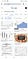

Cognitive ease, exposure effect and brand names

It is good to remember that a brand is not a logo neither a mane. it is more likely to be the story that people tell themselves when they engage with you, your service or product but for sure a simple remarkable easy to pronounce name can help you fix your brand into the brain of your audience. cognitive science has discovered that name of stocks or stickers easy to pronounce outperformed the ones hard to pronounce in their first days of introduction. Professor Jazonc made an experiment with the student journal of the university of Michigan by showing ads with Turkish words to students. He discovered that the Turkish words that were more displayed was judged by the students as more good. This is what he called mere exposure effect. We already know that showing up with our work matter but with the mere exposure effect we also know that we should show up with consistency, I mean frequency. Showing up everyday will just raise our status and help us be seen as good. That’s what brand marketing is now all about showing up frequently by loosing lot of money paying ads placement and gaining in the long run this favorable judgement due to the number If time people saw the ads. If you spend money in ads and expecting to get result right now you have for sure a bad strategy and will bankrupt. Ads are for brand marketers that have big financial surface to keep showing up until the mere exposure effect apply but be sure to have a minimum viable product to market. If you don’t have this financial surface target a minimum viable audience and try to find hacks and channels to reach this audience with the minimum amount of money. Whatever your side is brand marketer or bootstapper “keep showing up” is a mantra like I do with all this short form articles I post.
